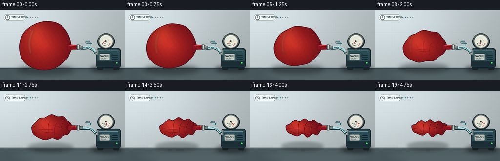
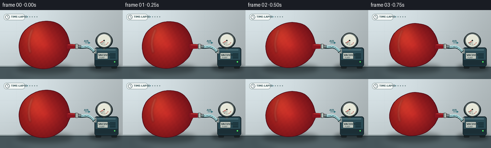

CODING AGENTS AS PIXEL WORLD MODELS
traex/GPT-5.6-Sol · mechanics_0024
点击播放 · 原生 RGB 像素
逐轮保存的候选
回放视频、检查图与代码变化。
每份候选均可单独播放。实际图片检查记录在下方工具轨迹中。
候选 01播放与检查图
点击播放 · 原生 RGB 像素


展开代码变化
--- 上一保存版本
+++ 本次保存版本
@@ -0,0 +1,294 @@
+from pathlib import Path
+import math
+import numpy as np
+from PIL import Image, ImageDraw, ImageFilter, ImageFont
+import artifact_io
+
+W, H, N, S = 256, 144, 20, 4
+OUT = Path(__file__).resolve().parent
+rng = np.random.default_rng(2402)
+
+try:
+ FONT_BOLD = ImageFont.truetype('/usr/share/fonts/truetype/dejavu/DejaVuSans-Bold.ttf', 5*S)
+ FONT_TINY = ImageFont.truetype('/usr/share/fonts/truetype/dejavu/DejaVuSans.ttf', 4*S)
+except OSError:
+ FONT_BOLD = ImageFont.load_default()
+ FONT_TINY = ImageFont.load_default()
+
+def sc(v):
+ return int(round(v*S))
+
+def box(b):
+ return tuple(sc(v) for v in b)
+
+def pts(seq):
+ return [(sc(x), sc(y)) for x, y in seq]
+
+def smoothstep(x):
+ return x*x*(3-2*x)
+
+def catmull_closed(control, samples=7):
+ """Smooth closed polygon through all controls."""
+ n = len(control)
+ out = []
+ for i in range(n):
+ p0 = np.array(control[(i-1) % n], float)
+ p1 = np.array(control[i], float)
+ p2 = np.array(control[(i+1) % n], float)
+ p3 = np.array(control[(i+2) % n], float)
+ for j in range(samples):
+ t = j / samples
+ t2, t3 = t*t, t*t*t
+ p = 0.5*((2*p1) + (-p0+p2)*t + (2*p0-5*p1+4*p2-p3)*t2 + (-p0+3*p1-3*p2+p3)*t3)
+ out.append((float(p[0]), float(p[1])))
+ return out
+
+def polyline_curve(draw, points_xy, fill, width):
+ draw.line(pts(points_xy), fill=fill, width=max(1, sc(width)), joint='curve')
+
+def qcurve(p0, p1, p2, steps=18):
+ out=[]
+ for i in range(steps+1):
+ t=i/steps
+ x=(1-t)**2*p0[0]+2*(1-t)*t*p1[0]+t*t*p2[0]
+ y=(1-t)**2*p0[1]+2*(1-t)*t*p1[1]+t*t*p2[1]
+ out.append((x,y))
+ return out
+
+def draw_background(frame_i):
+ # Cool, clean laboratory wall with soft top-left illumination.
+ yy, xx = np.mgrid[0:H*S, 0:W*S]
+ x = xx / S; y = yy / S
+ light = 1.0 - 0.15*(x/W) - 0.08*(y/H)
+ glow = np.exp(-((x-70)**2/(2*90**2)+(y-23)**2/(2*55**2)))
+ base = np.zeros((H*S,W*S,3), dtype=np.float32)
+ base[...,0] = 205*light + 18*glow
+ base[...,1] = 216*light + 19*glow
+ base[...,2] = 219*light + 20*glow
+ # very restrained fixed film grain (identical each frame, so no shimmer)
+ grain = rng.normal(0, 0.7, (H*S,W*S,1))
+ base += grain
+ base = np.clip(base,0,255).astype(np.uint8)
+ im = Image.fromarray(base,'RGB')
+ d=ImageDraw.Draw(im,'RGBA')
+ # Wall seams and back splash.
+ d.line(pts([(0,45),(256,45)]), fill=(128,149,153,26), width=sc(.55))
+ d.line(pts([(0,91),(256,91)]), fill=(128,149,153,20), width=sc(.55))
+ for x0 in [34,102,170,238]:
+ d.line(pts([(x0,0),(x0,113)]), fill=(138,155,160,18), width=sc(.45))
+ # Table top.
+ d.rectangle(box((0,116,256,144)), fill=(71,86,91,255))
+ d.rectangle(box((0,116,256,118)), fill=(184,196,197,180))
+ d.line(pts([(0,119),(256,119)]), fill=(25,35,39,100), width=sc(1))
+ # Soft reflected band on the work surface.
+ surf=Image.new('RGBA', im.size, (0,0,0,0)); sd=ImageDraw.Draw(surf,'RGBA')
+ sd.ellipse(box((18,118,248,147)), fill=(190,207,208,23))
+ surf=surf.filter(ImageFilter.GaussianBlur(sc(7)))
+ im=Image.alpha_composite(im.convert('RGBA'), surf)
+ return im
+
+def draw_pump(im, p, frame_i):
+ # table contact shadow
+ sh=Image.new('RGBA', im.size, (0,0,0,0)); sd=ImageDraw.Draw(sh,'RGBA')
+ sd.ellipse(box((185,112,252,128)), fill=(12,19,22,120))
+ sh=sh.filter(ImageFilter.GaussianBlur(sc(4)))
+ im.alpha_composite(sh)
+ d=ImageDraw.Draw(im,'RGBA')
+ # Feet, body and top cap of compact diaphragm vacuum pump.
+ d.rounded_rectangle(box((199,111,211,122)), radius=sc(2), fill=(25,32,34,255))
+ d.rounded_rectangle(box((232,111,244,122)), radius=sc(2), fill=(25,32,34,255))
+ d.rounded_rectangle(box((197,78,247,118)), radius=sc(5), fill=(29,52,61,255), outline=(16,30,35,255), width=sc(1))
+ d.rounded_rectangle(box((199,80,245,113)), radius=sc(4), fill=(43,75,85,255))
+ d.rectangle(box((199,104,245,114)), fill=(27,46,53,255))
+ d.line(pts([(202,83),(241,83)]), fill=(125,163,169,90), width=sc(1))
+ # side vents
+ for y0 in [91,95,99]:
+ d.rounded_rectangle(box((229,y0,241,y0+1.5)), radius=sc(.7), fill=(15,34,40,180))
+ # pump plate and button
+ d.rounded_rectangle(box((203,89,225,102)), radius=sc(1.2), fill=(190,198,190,235), outline=(10,25,29,150), width=sc(.5))
+ d.text((sc(205),sc(91)), 'VACUUM', font=FONT_BOLD, fill=(27,43,46,255))
+ d.text((sc(207),sc(97)), 'PUMP', font=FONT_TINY, fill=(51,70,73,255))
+ pulse = 205 + int(35*math.sin(frame_i*1.7)**2)
+ d.ellipse(box((237,106,241,110)), fill=(80,pulse,106,255), outline=(8,33,22,255), width=sc(.5))
+ # inlet fitting
+ d.rectangle(box((193,82,201,89)), fill=(97,110,111,255), outline=(30,43,44,255), width=sc(.7))
+ d.rectangle(box((195,80.5,201,90.5)), fill=(134,144,142,255))
+ d.line(pts([(197,82),(197,89)]), fill=(230,235,228,140), width=sc(.7))
+ # gauge stem
+ d.rectangle(box((214,72,220,82)), fill=(91,100,98,255), outline=(33,42,42,255), width=sc(.6))
+ # gauge shadow and case
+ d.ellipse(box((199,48,235,80)), fill=(12,24,28,75))
+ d.ellipse(box((200,47,234,79)), fill=(84,94,94,255), outline=(29,40,42,255), width=sc(1))
+ d.ellipse(box((203,50,231,77)), fill=(230,231,216,255), outline=(164,173,166,255), width=sc(.7))
+ cx,cy,r=217,63.5,11.5
+ # dial ticks, red vacuum sector
+ for j in range(9):
+ ang=math.radians(150-j*15)
+ col=(159,45,41,255) if j>=6 else (35,50,50,230)
+ r1=8.8 if j%2 else 8.1
+ d.line(pts([(cx+math.cos(ang)*r1,cy+math.sin(ang)*r1),
+ (cx+math.cos(ang)*10.4,cy+math.sin(ang)*10.4)]), fill=col, width=sc(.65))
+ d.text((sc(211.2),sc(66.3)), 'VAC', font=FONT_TINY, fill=(55,65,63,255))
+ # needle steadily sweeps toward deep vacuum
+ angle=math.radians(150-120*smoothstep(p))
+ ex,ey=cx+math.cos(angle)*8.5, cy+math.sin(angle)*8.5
+ d.line(pts([(cx,cy),(ex,ey)]), fill=(181,34,29,255), width=sc(1))
+ d.ellipse(box((cx-1.4,cy-1.4,cx+1.4,cy+1.4)), fill=(43,48,46,255))
+ # glass glint
+ d.arc(box((204,51,230,76)), 205,285, fill=(255,255,255,120), width=sc(.7))
+ return im
+
+def tube_point(u):
+ # Piecewise path through the transparent hose from balloon toward the pump.
+ if u < .48:
+ t=u/.48
+ return 158+22*t, 75.5+0.8*math.sin(t*math.pi)
+ t=(u-.48)/.52
+ # quadratic down to inlet
+ return ((1-t)**2*180 + 2*(1-t)*t*188 + t*t*196,
+ (1-t)**2*75.5 + 2*(1-t)*t*76 + t*t*85.5)
+
+def draw_tube(im, p, frame_i):
+ d=ImageDraw.Draw(im,'RGBA')
+ path=[tube_point(i/48) for i in range(49)]
+ # dark lower edge, clear wall, inner bore and highlight
+ d.line(pts([(x+0.6,y+1.2) for x,y in path]), fill=(19,45,50,115), width=sc(6), joint='curve')
+ d.line(pts(path), fill=(180,220,222,180), width=sc(5), joint='curve')
+ d.line(pts(path), fill=(67,126,135,180), width=sc(2.3), joint='curve')
+ d.line(pts([(x,y-.7) for x,y in path]), fill=(240,255,252,155), width=sc(.8), joint='curve')
+ # moving pale air packets: fewer as the balloon reaches a vacuum
+ count=max(0, int(round(5*(1-p))))
+ for k in range(count):
+ u=(frame_i*.11 + k/max(count,1)*.78) % .90 + .05
+ x,y=tube_point(u)
+ d.ellipse(box((x-1.2,y-1.1,x+1.2,y+1.1)), fill=(224,253,255,225), outline=(71,149,159,190), width=sc(.4))
+ # explicit direction chevron, from balloon into pump
+ d.line(pts([(177,68.2),(188,68.2)]), fill=(37,107,118,190), width=sc(1.1))
+ d.polygon(pts([(188,68.2),(184.5,65.9),(184.5,70.5)]), fill=(37,107,118,210))
+ d.text((sc(175),sc(61.7)), 'AIR', font=FONT_BOLD, fill=(40,96,105,235))
+ return im
+
+INFLATED = np.array([
+ (145,68),(139,49),(126,32),(108,24),(86,24),(65,32),(49,46),(41,64),(40,82),
+ (46,101),(61,115),(82,122),(104,121),(123,112),(137,99),(143,87),(146,80),(146,74)
+],float)
+COLLAPSED = np.array([
+ (146,69),(138,66),(131,62),(122,64),(113,60),(103,64),(95,61),(84,67),(75,73),
+ (78,82),(87,88),(98,90),(108,87),(117,93),(128,88),(137,90),(143,83),(146,78)
+],float)
+
+def balloon_outline(p, frame_i):
+ q = smoothstep(p**0.82)
+ c=INFLATED*(1-q)+COLLAPSED*q
+ # gentle elastic settling without moving the sealed neck
+ settle=math.sin(frame_i*.63)*0.65*q*(1-q)
+ weights=np.sin(np.linspace(0,math.pi,len(c)))**2
+ c[:,1]+=settle*weights
+ # Increasing little folds in the perimeter.
+ fold=np.array([0,.2,-.3,.35,-.4,.3,-.2,.35,-.3,.35,-.2,.35,-.4,.35,-.2,.2,0,0])
+ c[:,1]+=fold*(q**1.2)*3.0
+ return catmull_closed(c.tolist(), 8)
+
+def draw_balloon(im,p,frame_i):
+ outline=balloon_outline(p,frame_i)
+ # Cast shadow changes from broad and soft to narrow and crisp.
+ shadow=Image.new('RGBA',im.size,(0,0,0,0)); sd=ImageDraw.Draw(shadow,'RGBA')
+ q=smoothstep(p**.82)
+ sd.ellipse(box((35+30*q,112-8*q,151,133-10*q)), fill=(15,22,24,int(95-20*q)))
+ shadow=shadow.filter(ImageFilter.GaussianBlur(sc(5-2*q)))
+ im.alpha_composite(shadow)
+ # body mask
+ mask=Image.new('L',im.size,0); md=ImageDraw.Draw(mask)
+ md.polygon(pts(outline), fill=255)
+ # Rich directional rubber shading.
+ yy,xx=np.mgrid[0:H*S,0:W*S]; x=xx/S; y=yy/S
+ cx=93+9*q; cy=73+4*q
+ rx=55-14*q; ry=52-35*q
+ radial=np.sqrt(((x-cx)/max(rx,1))**2+((y-cy)/max(ry,1))**2)
+ edge=np.clip(1-radial,0,1)
+ hi=np.exp(-((x-(72+23*q))**2/(2*(17-5*q)**2)+(y-(48+18*q))**2/(2*(21-10*q)**2)))
+ side=np.clip((146-x)/105,0,1)
+ r=112+67*edge+44*hi+23*side
+ g=17+20*edge+24*hi+6*side
+ b=25+12*edge+10*hi
+ # subtle rubber texture fixed in object coordinates
+ texture=2.2*np.sin(x*.63+y*.17)*np.sin(y*.51)
+ arr=np.stack([r+texture,g+texture*.35,b+texture*.2,np.full_like(r,255)],axis=-1)
+ arr=np.clip(arr,0,255).astype(np.uint8)
+ body=Image.fromarray(arr,'RGBA'); body.putalpha(mask)
+ im.alpha_composite(body)
+ d=ImageDraw.Draw(im,'RGBA')
+ d.line(pts(outline+[outline[0]]), fill=(79,11,23,245), width=sc(1.15), joint='curve')
+ # A soft, long reflected window stripe; shrinks and fragments as rubber folds.
+ sheen=Image.new('RGBA',im.size,(0,0,0,0)); shd=ImageDraw.Draw(sheen,'RGBA')
+ if q < .72:
+ shd.line(pts(qcurve((68+22*q,39+23*q),(55+25*q,65),(63+22*q,89-3*q))),
+ fill=(255,173,143,int(110*(1-q*.6))), width=sc(3.2-1.3*q))
+ sheen=sheen.filter(ImageFilter.GaussianBlur(sc(1.7)))
+ sheen.putalpha(Image.composite(sheen.getchannel('A'),Image.new('L',im.size,0),mask))
+ im.alpha_composite(sheen)
+ # Creases emerge as air is withdrawn. They are clipped to the body.
+ wrinkles=Image.new('RGBA',im.size,(0,0,0,0)); wd=ImageDraw.Draw(wrinkles,'RGBA')
+ alpha=int(205*max(0,(q-.18)/.82))
+ if alpha>0:
+ crease_specs=[
+ ((83,68),(91,76),(98,88)), ((101,65),(97,73),(99,88)),
+ ((116,65),(109,75),(111,89)), ((129,68),(121,78),(126,88)),
+ ((78,77),(91,79),(107,78)), ((92,88),(105,83),(119,90)),
+ ((109,70),(120,73),(136,78)), ((83,83),(91,87),(98,86))]
+ for j,(a,b,c) in enumerate(crease_specs):
+ # positions interpolate upward from invisible center as collapse develops
+ off=(1-q)*(-4 if j%2 else 4)
+ curve=[(x,y+off) for x,y in qcurve(a,b,c,14)]
+ wd.line(pts(curve), fill=(67,7,19,alpha), width=sc(1.0 if j<4 else .75))
+ curve2=[(x-.5,y-1.0) for x,y in curve]
+ wd.line(pts(curve2), fill=(242,93,73,int(alpha*.42)), width=sc(.55))
+ wrinkles.putalpha(Image.composite(wrinkles.getchannel('A'),Image.new('L',im.size,0),mask))
+ im.alpha_composite(wrinkles)
+ # Balloon mouth/neck surrounds a rigid cannula: an obvious airtight seal.
+ d=ImageDraw.Draw(im,'RGBA')
+ neck_top=70.3+.9*q; neck_bot=81.0-.4*q
+ d.polygon(pts([(138,neck_top),(159,71.5),(166,73),(166,79),(158,80.2),(139,neck_bot)]),
+ fill=(137,20,31,255), outline=(73,9,20,255))
+ d.line(pts([(142,72.2),(160,73.1)]), fill=(242,92,73,155), width=sc(1))
+ # Metal cannula seen within end of nozzle.
+ d.rectangle(box((160,73.3,169,78.8)), fill=(116,135,136,255), outline=(35,55,58,255), width=sc(.6))
+ d.line(pts([(161,74.2),(168,74.6)]), fill=(235,246,240,170), width=sc(.6))
+ # Compression collar with twin dark seal rings.
+ d.rounded_rectangle(box((156.5,70.5,162.7,81.0)), radius=sc(1.4), fill=(177,186,180,255), outline=(45,59,59,255), width=sc(.7))
+ d.line(pts([(158.2,71),(158.2,80.4)]), fill=(63,73,72,255), width=sc(.8))
+ d.line(pts([(160.5,71),(160.5,80.3)]), fill=(234,239,229,170), width=sc(.6))
+ return im
+
+def draw_time_cue(im,p):
+ # Small unobtrusive clock and progress strip establish the timelapse presentation.
+ d=ImageDraw.Draw(im,'RGBA')
+ d.rounded_rectangle(box((8,8,52,21)), radius=sc(5.5), fill=(244,248,246,180), outline=(80,103,106,80), width=sc(.6))
+ d.ellipse(box((11,10,20,19)), fill=(255,255,255,210), outline=(47,77,82,220), width=sc(.7))
+ d.line(pts([(15.5,14.5),(15.5,11.9)]), fill=(44,74,79,255), width=sc(.7))
+ d.line(pts([(15.5,14.5),(18,15.6)]), fill=(44,74,79,255), width=sc(.7))
+ d.text((sc(23),sc(11)), 'TIME-LAPSE', font=FONT_BOLD, fill=(48,76,80,230))
+ # five dots progressively fill across the five-second shot
+ for j in range(5):
+ col=(46,111,120,230) if p >= j/5-.001 else (108,132,134,80)
+ d.ellipse(box((56+j*5,13,58+j*5,15)), fill=col)
+ return im
+
+def render(frame_i):
+ p=frame_i/(N-1)
+ im=draw_background(frame_i)
+ im=draw_pump(im,p,frame_i)
+ im=draw_tube(im,p,frame_i)
+ im=draw_balloon(im,p,frame_i)
+ im=draw_time_cue(im,p)
+ # Final global downsample provides smooth 3x antialiasing.
+ im=im.convert('RGB').resize((W,H),Image.Resampling.LANCZOS)
+ return np.asarray(im,dtype=np.uint8)
+
+def main():
+ frames=np.stack([render(i) for i in range(N)],axis=0)
+ artifact_io.save(frames,OUT)
+ print(f'saved {frames.shape} RGB frames; mean={frames.mean():.2f}')
+
+if __name__=='__main__':
+ main()
候选 02播放与检查图
点击播放 · 原生 RGB 像素
展开代码变化
--- 上一保存版本
+++ 本次保存版本
@@ -7,6 +7,8 @@
W, H, N, S = 256, 144, 20, 4
OUT = Path(__file__).resolve().parent
rng = np.random.default_rng(2402)
+# A fixed sensor-grain plate avoids artificial temporal shimmer.
+FIXED_GRAIN = rng.normal(0, 0.7, (H*S, W*S, 1))
try:
FONT_BOLD = ImageFont.truetype('/usr/share/fonts/truetype/dejavu/DejaVuSans-Bold.ttf', 5*S)
@@ -66,8 +68,7 @@
base[...,1] = 216*light + 19*glow
base[...,2] = 219*light + 20*glow
# very restrained fixed film grain (identical each frame, so no shimmer)
- grain = rng.normal(0, 0.7, (H*S,W*S,1))
- base += grain
+ base += FIXED_GRAIN
base = np.clip(base,0,255).astype(np.uint8)
im = Image.fromarray(base,'RGB')
d=ImageDraw.Draw(im,'RGBA')
候选 03播放与检查图
可观测工具轨迹
实际执行的命令与返回图片。
命令 1exit 0
/bin/bash -lc "cat prompt.txt && printf '\\n--- GENERATION_RULES.md ---\\n' && cat GENERATION_RULES.md && printf '\\n--- task_spec.json ---\\n' && cat task_spec.json"
命令 2exit 0
/bin/bash -lc "find . -maxdepth 2 -type f -printf '%p\\n' | sort && printf '\\n--- tools ---\\n' && command -v ffmpeg || true; command -v python3 || true; command -v blender || true; command -v convert || true"
命令 3exit 0
/bin/bash -lc 'cat artifact_io.py'
命令 4exit 0
/bin/bash -lc "cat > generate.py <<'PY'
from pathlib import Path
import math
import numpy as np
from PIL import Image, ImageDraw, ImageFilter, ImageFont
import artifact_io
W, H, N, S = 256, 144, 20, 4
OUT = Path(__file__).resolve().parent
rng = np.random.default_rng(2402)
try:
FONT_BOLD = ImageFont.truetype('/usr/share/fonts/truetype/dejavu/DejaVuSans-Bold.ttf', 5*S)
FONT_TINY = ImageFont.truetype('/usr/share/fonts/truetype/dejavu/DejaVuSans.ttf', 4*S)
except OSError:
FONT_BOLD = ImageFont.load_default()
FONT_TINY = ImageFont.load_default()
def sc(v):
return int(round(v*S))
def box(b):
return tuple(sc(v) for v in b)
def pts(seq):
return [(sc(x), sc(y)) for x, y in seq]
def smoothstep(x):
return x*x*(3-2*x)
def catmull_closed(control, samples=7):
\"\"\"Smooth closed polygon through all controls.\"\"\"
n = len(control)
out = []
for i in range(n):
p0 = np.array(control[(i-1) % n], float)
p1 = np.array(control[i], float)
p2 = np.array(control[(i+1) % n], float)
p3 = np.array(control[(i+2) % n], float)
for j in range(samples):
t = j / samples
t2, t3 = t*t, t*t*t
p = 0.5*((2*p1) + (-p0+p2)*t + (2*p0-5*p1+4*p2-p3)*t2 + (-p0+3*p1-3*p2+p3)*t3)
out.append((float(p[0]), float(p[1])))
return out
def polyline_curve(draw, points_xy, fill, width):
draw.line(pts(points_xy), fill=fill, width=max(1, sc(width)), joint='curve')
def qcurve(p0, p1, p2, steps=18):
out=[]
for i in range(steps+1):
t=i/steps
x=(1-t)**2*p0[0]+2*(1-t)*t*p1[0]+t*t*p2[0]
y=(1-t)**2*p0[1]+2*(1-t)*t*p1[1]+t*t*p2[1]
out.append((x,y))
return out
def draw_background(frame_i):
# Cool, clean laboratory wall with soft top-left illumination.
yy, xx = np.mgrid[0:H*S, 0:W*S]
x = xx / S; y = yy / S
light = 1.0 - 0.15*(x/W) - 0.08*(y/H)
glow = np.exp(-((x-70)**2/(2*90**2)+(y-23)**2/(2*55**2)))
base = np.zeros((H*S,W*S,3), dtype=np.float32)
base[...,0] = 205*light + 18*glow
base[...,1] = 216*light + 19*glow
base[...,2] = 219*light + 20*glow
# very restrained fixed film grain (identical each frame, so no shimmer)
grain = rng.normal(0, 0.7, (H*S,W*S,1))
base += grain
base = np.clip(base,0,255).astype(np.uint8)
im = Image.fromarray(base,'RGB')
d=ImageDraw.Draw(im,'RGBA')
# Wall seams and back splash.
d.line(pts([(0,45),(256,45)]), fill=(128,149,153,26), width=sc(.55))
d.line(pts([(0,91),(256,91)]), fill=(128,149,153,20), width=sc(.55))
for x0 in [34,102,170,238]:
d.line(pts([(x0,0),(x0,113)]), fill=(138,155,160,18), width=sc(.45))
# Table top.
d.rectangle(box((0,116,256,144)), fill=(71,86,91,255))
d.rectangle(box((0,116,256,118)), fill=(184,196,197,180))
d.line(pts([(0,119),(256,119)]), fill=(25,35,39,100), width=sc(1))
# Soft reflected band on the work surface.
surf=Image.new('RGBA', im.size, (0,0,0,0)); sd=ImageDraw.Draw(surf,'RGBA')
sd.ellipse(box((18,118,248,147)), fill=(190,207,208,23))
surf=surf.filter(ImageFilter.GaussianBlur(sc(7)))
im=Image.alpha_composite(im.convert('RGBA'), surf)
return im
def draw_pump(im, p, frame_i):
# table contact shadow
sh=Image.new('RGBA', im.size, (0,0,0,0)); sd=ImageDraw.Draw(sh,'RGBA')
sd.ellipse(box((185,112,252,128)), fill=(12,19,22,120))
sh=sh.filter(ImageFilter.GaussianBlur(sc(4)))
im.alpha_composite(sh)
d=ImageDraw.Draw(im,'RGBA')
# Feet, body and top cap of compact diaphragm vacuum pump.
d.rounded_rectangle(box((199,111,211,122)), radius=sc(2), fill=(25,32,34,255))
d.rounded_rectangle(box((232,111,244,122)), radius=sc(2), fill=(25,32,34,255))
d.rounded_rectangle(box((197,78,247,118)), radius=sc(5), fill=(29,52,61,255), outline=(16,30,35,255), width=sc(1))
d.rounded_rectangle(box((199,80,245,113)), radius=sc(4), fill=(43,75,85,255))
d.rectangle(box((199,104,245,114)), fill=(27,46,53,255))
d.line(pts([(202,83),(241,83)]), fill=(125,163,169,90), width=sc(1))
# side vents
for y0 in [91,95,99]:
d.rounded_rectangle(box((229,y0,241,y0+1.5)), radius=sc(.7), fill=(15,34,40,180))
# pump plate and button
d.rounded_rectangle(box((203,89,225,102)), radius=sc(1.2), fill=(190,198,190,235), outline=(10,25,29,150), width=sc(.5))
d.text((sc(205),sc(91)), 'VACUUM', font=FONT_BOLD, fill=(27,43,46,255))
d.text((sc(207),sc(97)), 'PUMP', font=FONT_TINY, fill=(51,70,73,255))
pulse = 205 + int(35*math.sin(frame_i*1.7)**2)
d.ellipse(box((237,106,241,110)), fill=(80,pulse,106,255), outline=(8,33,22,255), width=sc(.5))
# inlet fitting
d.rectangle(box((193,82,201,89)), fill=(97,110,111,255), outline=(30,43,44,255), width=sc(.7))
d.rectangle(box((195,80.5,201,90.5)), fill=(134,144,142,255))
d.line(pts([(197,82),(197,89)]), fill=(230,235,228,140), width=sc(.7))
# gauge stem
d.rectangle(box((214,72,220,82)), fill=(91,100,98,255), outline=(33,42,42,255), width=sc(.6))
# gauge shadow and case
d.ellipse(box((199,48,235,80)), fill=(12,24,28,75))
d.ellipse(box((200,47,234,79)), fill=(84,94,94,255), outline=(29,40,42,255), width=sc(1))
d.ellipse(box((203,50,231,77)), fill=(230,231,216,255), outline=(164,173,166,255), width=sc(.7))
cx,cy,r=217,63.5,11.5
# dial ticks, red vacuum sector
for j in range(9):
ang=math.radians(150-j*15)
col=(159,45,41,255) if j>=6 else (35,50,50,230)
r1=8.8 if j%2 else 8.1
d.line(pts([(cx+math.cos(ang)*r1,cy+math.sin(ang)*r1),
(cx+math.cos(ang)*10.4,cy+math.sin(ang)*10.4)]), fill=col, width=sc(.65))
d.text((sc(211.2),sc(66.3)), 'VAC', font=FONT_TINY, fill=(55,65,63,255))
# needle steadily sweeps toward deep vacuum
angle=math.radians(150-120*smoothstep(p))
ex,ey=cx+math.cos(angle)*8.5, cy+math.sin(angle)*8.5
d.line(pts([(cx,cy),(ex,ey)]), fill=(181,34,29,255), width=sc(1))
d.ellipse(box((cx-1.4,cy-1.4,cx+1.4,cy+1.4)), fill=(43,48,46,255))
# glass glint
d.arc(box((204,51,230,76)), 205,285, fill=(255,255,255,120), width=sc(.7))
return im
def tube_point(u):
# Piecewise path through the transparent hose from balloon toward the pump.
if u < .48:
t=u/.48
return 158+22*t, 75.5+0.8*math.sin(t*math.pi)
t=(u-.48)/.52
# quadratic down to inlet
return ((1-t)**2*180 + 2*(1-t)*t*188 + t*t*196,
(1-t)**2*75.5 + 2*(1-t)*t*76 + t*t*85.5)
def draw_tube(im, p, frame_i):
d=ImageDraw.Draw(im,'RGBA')
path=[tube_point(i/48) for i in range(49)]
# dark lower edge, clear wall, inner bore and highlight
d.line(pts([(x+0.6,y+1.2) for x,y in path]), fill=(19,45,50,115), width=sc(6), joint='curve')
d.line(pts(path), fill=(180,220,222,180), width=sc(5), joint='curve')
d.line(pts(path), fill=(67,126,135,180), width=sc(2.3), joint='curve')
d.line(pts([(x,y-.7) for x,y in path]), fill=(240,255,252,155), width=sc(.8), joint='curve')
# moving pale air packets: fewer as the balloon reaches a vacuum
count=max(0, int(round(5*(1-p))))
for k in range(count):
u=(frame_i*.11 + k/max(count,1)*.78) % .90 + .05
x,y=tube_point(u)
d.ellipse(box((x-1.2,y-1.1,x+1.2,y+1.1)), fill=(224,253,255,225), outline=(71,149,159,190), width=sc(.4))
# explicit direction chevron, from balloon into pump
d.line(pts([(177,68.2),(188,68.2)]), fill=(37,107,118,190), width=sc(1.1))
d.polygon(pts([(188,68.2),(184.5,65.9),(184.5,70.5)]), fill=(37,107,118,210))
d.text((sc(175),sc(61.7)), 'AIR', font=FONT_BOLD, fill=(40,96,105,235))
return im
INFLATED = np.array([
(145,68),(139,49),(126,32),(108,24),(86,24),(65,32),(49,46),(41,64),(40,82),
(46,101),(61,115),(82,122),(104,121),(123,112),(137,99),(143,87),(146,80),(146,74)
],float)
COLLAPSED = np.array([
(146,69),(138,66),(131,62),(122,64),(113,60),(103,64),(95,61),(84,67),(75,73),
(78,82),(87,88),(98,90),(108,87),(117,93),(128,88),(137,90),(143,83),(146,78)
],float)
def balloon_outline(p, frame_i):
q = smoothstep(p**0.82)
c=INFLATED*(1-q)+COLLAPSED*q
# gentle elastic settling without moving the sealed neck
settle=math.sin(frame_i*.63)*0.65*q*(1-q)
weights=np.sin(np.linspace(0,math.pi,len(c)))**2
c[:,1]+=settle*weights
# Increasing little folds in the perimeter.
fold=np.array([0,.2,-.3,.35,-.4,.3,-.2,.35,-.3,.35,-.2,.35,-.4,.35,-.2,.2,0,0])
c[:,1]+=fold*(q**1.2)*3.0
return catmull_closed(c.tolist(), 8)
def draw_balloon(im,p,frame_i):
outline=balloon_outline(p,frame_i)
# Cast shadow changes from broad and soft to narrow and crisp.
shadow=Image.new('RGBA',im.size,(0,0,0,0)); sd=ImageDraw.Draw(shadow,'RGBA')
q=smoothstep(p**.82)
sd.ellipse(box((35+30*q,112-8*q,151,133-10*q)), fill=(15,22,24,int(95-20*q)))
shadow=shadow.filter(ImageFilter.GaussianBlur(sc(5-2*q)))
im.alpha_composite(shadow)
# body mask
mask=Image.new('L',im.size,0); md=ImageDraw.Draw(mask)
md.polygon(pts(outline), fill=255)
# Rich directional rubber shading.
yy,xx=np.mgrid[0:H*S,0:W*S]; x=xx/S; y=yy/S
cx=93+9*q; cy=73+4*q
rx=55-14*q; ry=52-35*q
radial=np.sqrt(((x-cx)/max(rx,1))**2+((y-cy)/max(ry,1))**2)
edge=np.clip(1-radial,0,1)
hi=np.exp(-((x-(72+23*q))**2/(2*(17-5*q)**2)+(y-(48+18*q))**2/(2*(21-10*q)**2)))
side=np.clip((146-x)/105,0,1)
r=112+67*edge+44*hi+23*side
g=17+20*edge+24*hi+6*side
b=25+12*edge+10*hi
# subtle rubber texture fixed in object coordinates
texture=2.2*np.sin(x*.63+y*.17)*np.sin(y*.51)
arr=np.stack([r+texture,g+texture*.35,b+texture*.2,np.full_like(r,255)],axis=-1)
arr=np.clip(arr,0,255).astype(np.uint8)
body=Image.fromarray(arr,'RGBA'); body.putalpha(mask)
im.alpha_composite(body)
d=ImageDraw.Draw(im,'RGBA')
d.line(pts(outline+[outline[0]]), fill=(79,11,23,245), width=sc(1.15), joint='curve')
# A soft, long reflected window stripe; shrinks and fragments as rubber folds.
sheen=Image.new('RGBA',im.size,(0,0,0,0)); shd=ImageDraw.Draw(sheen,'RGBA')
if q < .72:
shd.line(pts(qcurve((68+22*q,39+23*q),(55+25*q,65),(63+22*q,89-3*q))),
fill=(255,173,143,int(110*(1-q*.6))), width=sc(3.2-1.3*q))
sheen=sheen.filter(ImageFilter.GaussianBlur(sc(1.7)))
sheen.putalpha(Image.composite(sheen.getchannel('A'),Image.new('L',im.size,0),mask))
im.alpha_composite(sheen)
# Creases emerge as air is withdrawn. They are clipped to the body.
wrinkles=Image.new('RGBA',im.size,(0,0,0,0)); wd=ImageDraw.Draw(wrinkles,'RGBA')
alpha=int(205*max(0,(q-.18)/.82))
if alpha>0:
crease_specs=[
((83,68),(91,76),(98,88)), ((101,65),(97,73),(99,88)),
((116,65),(109,75),(111,89)), ((129,68),(121,78),(126,88)),
((78,77),(91,79),(107,78)), ((92,88),(105,83),(119,90)),
((109,70),(120,73),(136,78)), ((83,83),(91,87),(98,86))]
for j,(a,b,c) in enumerate(crease_specs):
# positions interpolate upward from invisible center as collapse develops
off=(1-q)*(-4 if j%2 else 4)
curve=[(x,y+off) for x,y in qcurve(a,b,c,14)]
wd.line(pts(curve), fill=(67,7,19,alpha), width=sc(1.0 if j<4 else .75))
curve2=[(x-.5,y-1.0) for x,y in curve]
wd.line(pts(curve2), fill=(242,93,73,int(alpha*.42)), width=sc(.55))
wrinkles.putalpha(Image.composite(wrinkles.getchannel('A'),Image.new('L',im.size,0),mask))
im.alpha_composite(wrinkles)
# Balloon mouth/neck surrounds a rigid cannula: an obvious airtight seal.
d=ImageDraw.Draw(im,'RGBA')
neck_top=70.3+.9*q; neck_bot=81.0-.4*q
d.polygon(pts([(138,neck_top),(159,71.5),(166,73),(166,79),(158,80.2),(139,neck_bot)]),
fill=(137,20,31,255), outline=(73,9,20,255))
d.line(pts([(142,72.2),(160,73.1)]), fill=(242,92,73,155), width=sc(1))
# Metal cannula seen within end of nozzle.
d.rectangle(box((160,73.3,169,78.8)), fill=(116,135,136,255), outline=(35,55,58,255), width=sc(.6))
d.line(pts([(161,74.2),(168,74.6)]), fill=(235,246,240,170), width=sc(.6))
# Compression collar with twin dark seal rings.
d.rounded_rectangle(box((156.5,70.5,162.7,81.0)), radius=sc(1.4), fill=(177,186,180,255), outline=(45,59,59,255), width=sc(.7))
d.line(pts([(158.2,71),(158.2,80.4)]), fill=(63,73,72,255), width=sc(.8))
d.line(pts([(160.5,71),(160.5,80.3)]), fill=(234,239,229,170), width=sc(.6))
return im
def draw_time_cue(im,p):
# Small unobtrusive clock and progress strip establish the timelapse presentation.
d=ImageDraw.Draw(im,'RGBA')
d.rounded_rectangle(box((8,8,52,21)), radius=sc(5.5), fill=(244,248,246,180), outline=(80,103,106,80), width=sc(.6))
d.ellipse(box((11,10,20,19)), fill=(255,255,255,210), outline=(47,77,82,220), width=sc(.7))
d.line(pts([(15.5,14.5),(15.5,11.9)]), fill=(44,74,79,255), width=sc(.7))
d.line(pts([(15.5,14.5),(18,15.6)]), fill=(44,74,79,255), width=sc(.7))
d.text((sc(23),sc(11)), 'TIME-LAPSE', font=FONT_BOLD, fill=(48,76,80,230))
# five dots progressively fill across the five-second shot
for j in range(5):
col=(46,111,120,230) if p >= j/5-.001 else (108,132,134,80)
d.ellipse(box((56+j*5,13,58+j*5,15)), fill=col)
return im
def render(frame_i):
p=frame_i/(N-1)
im=draw_background(frame_i)
im=draw_pump(im,p,frame_i)
im=draw_tube(im,p,frame_i)
im=draw_balloon(im,p,frame_i)
im=draw_time_cue(im,p)
# Final global downsample provides smooth 3x antialiasing.
im=im.convert('RGB').resize((W,H),Image.Resampling.LANCZOS)
return np.asarray(im,dtype=np.uint8)
def main():
frames=np.stack([render(i) for i in range(N)],axis=0)
artifact_io.save(frames,OUT)
print(f'saved {frames.shape} RGB frames; mean={frames.mean():.2f}')
if __name__=='__main__':
main()
PY
python3 generate.py
ls -lh pixels.npz inspection.png index.html frames/00.png frames/19.png"命令 5exit 0
/bin/bash -lc "python3 - <<'PY'
p='generate.py'
s=open(p).read()
s=s.replace(\"rng = np.random.default_rng(2402)\\n\", \"rng = np.random.default_rng(2402)\\n# A fixed sensor-grain plate avoids artificial temporal shimmer.\\nFIXED_GRAIN = rng.normal(0, 0.7, (H*S, W*S, 1))\\n\")
s=s.replace(\"grain = rng.normal(0, 0.7, (H*S,W*S,1))\\n base += grain\", \"base += FIXED_GRAIN\")
open(p,'w').write(s)
PY
python3 generate.py
python3 - <<'PY'
import json, numpy as np
from PIL import Image
from pathlib import Path
frames=np.stack([np.array(Image.open(f'frames/{i:02d}.png')) for i in range(20)])
print('shape/dtype/range:',frames.shape,frames.dtype,frames.min(),frames.max())
d=np.abs(frames[1:].astype(np.int16)-frames[:-1].astype(np.int16))
print('adjacent MAE:',np.round(d.mean((1,2,3)),3).tolist())
print('first-final MAE:',np.abs(frames[-1].astype(int)-frames[0].astype(int)).mean())
print('all RGB:',all(x.mode=='RGB' and x.size==(256,144) for x in [Image.open(f'frames/{i:02d}.png') for i in range(20)]))
z=np.load('pixels.npz')['pixels']; print('packed tensor:',z.shape,z.dtype)
PY"保存候选 3 份；完成命令 5 次；可验证图片返回 0 张。原始 API 响应与完整日志保留在本地。